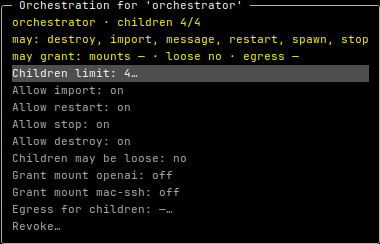

Your rules / real grant menu
Permission is bounded.

Child limit
Bound concurrent workers.
Allowed operations
Choose what the agent may do.
Grantable access
Mounts, egress, loose network.
The host-side broker
checks the grant.
Import a branch.
Merge separately.